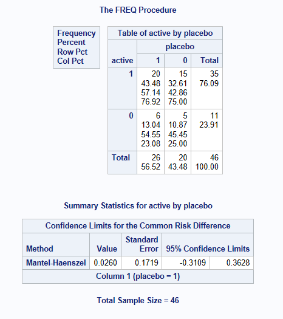

<!DOCTYPE html>
<html xmlns="http://www.w3.org/1999/xhtml" lang="en" xml:lang="en"><head>

<meta charset="utf-8">
<meta name="generator" content="quarto-1.6.42">

<meta name="viewport" content="width=device-width, initial-scale=1.0, user-scalable=yes">


<title>Confidence intervals for Proportions in SAS</title>
<style>
code{white-space: pre-wrap;}
span.smallcaps{font-variant: small-caps;}
div.columns{display: flex; gap: min(4vw, 1.5em);}
div.column{flex: auto; overflow-x: auto;}
div.hanging-indent{margin-left: 1.5em; text-indent: -1.5em;}
ul.task-list{list-style: none;}
ul.task-list li input[type="checkbox"] {
  width: 0.8em;
  margin: 0 0.8em 0.2em -1em; /* quarto-specific, see https://github.com/quarto-dev/quarto-cli/issues/4556 */ 
  vertical-align: middle;
}
/* CSS for syntax highlighting */
pre > code.sourceCode { white-space: pre; position: relative; }
pre > code.sourceCode > span { line-height: 1.25; }
pre > code.sourceCode > span:empty { height: 1.2em; }
.sourceCode { overflow: visible; }
code.sourceCode > span { color: inherit; text-decoration: inherit; }
div.sourceCode { margin: 1em 0; }
pre.sourceCode { margin: 0; }
@media screen {
div.sourceCode { overflow: auto; }
}
@media print {
pre > code.sourceCode { white-space: pre-wrap; }
pre > code.sourceCode > span { display: inline-block; text-indent: -5em; padding-left: 5em; }
}
pre.numberSource code
  { counter-reset: source-line 0; }
pre.numberSource code > span
  { position: relative; left: -4em; counter-increment: source-line; }
pre.numberSource code > span > a:first-child::before
  { content: counter(source-line);
    position: relative; left: -1em; text-align: right; vertical-align: baseline;
    border: none; display: inline-block;
    -webkit-touch-callout: none; -webkit-user-select: none;
    -khtml-user-select: none; -moz-user-select: none;
    -ms-user-select: none; user-select: none;
    padding: 0 4px; width: 4em;
  }
pre.numberSource { margin-left: 3em;  padding-left: 4px; }
div.sourceCode
  {   }
@media screen {
pre > code.sourceCode > span > a:first-child::before { text-decoration: underline; }
}
</style>


<script src="../site_libs/quarto-nav/quarto-nav.js"></script>
<script src="../site_libs/quarto-nav/headroom.min.js"></script>
<script src="../site_libs/clipboard/clipboard.min.js"></script>
<script src="../site_libs/quarto-search/autocomplete.umd.js"></script>
<script src="../site_libs/quarto-search/fuse.min.js"></script>
<script src="../site_libs/quarto-search/quarto-search.js"></script>
<meta name="quarto:offset" content="../">
<link href="../images/logo.png" rel="icon" type="image/png">
<script src="../site_libs/quarto-html/quarto.js"></script>
<script src="../site_libs/quarto-html/popper.min.js"></script>
<script src="../site_libs/quarto-html/tippy.umd.min.js"></script>
<script src="../site_libs/quarto-html/anchor.min.js"></script>
<link href="../site_libs/quarto-html/tippy.css" rel="stylesheet">
<link href="../site_libs/quarto-html/quarto-syntax-highlighting-2f5df379a58b258e96c21c0638c20c03.css" rel="stylesheet" id="quarto-text-highlighting-styles">
<script src="../site_libs/bootstrap/bootstrap.min.js"></script>
<link href="../site_libs/bootstrap/bootstrap-icons.css" rel="stylesheet">
<link href="../site_libs/bootstrap/bootstrap-ebfcb0ed0ac0539375ffcf22e0e9fa78.min.css" rel="stylesheet" append-hash="true" id="quarto-bootstrap" data-mode="light">
<script id="quarto-search-options" type="application/json">{
  "location": "navbar",
  "copy-button": false,
  "collapse-after": 3,
  "panel-placement": "end",
  "type": "overlay",
  "limit": 50,
  "keyboard-shortcut": [
    "f",
    "/",
    "s"
  ],
  "show-item-context": false,
  "language": {
    "search-no-results-text": "No results",
    "search-matching-documents-text": "matching documents",
    "search-copy-link-title": "Copy link to search",
    "search-hide-matches-text": "Hide additional matches",
    "search-more-match-text": "more match in this document",
    "search-more-matches-text": "more matches in this document",
    "search-clear-button-title": "Clear",
    "search-text-placeholder": "",
    "search-detached-cancel-button-title": "Cancel",
    "search-submit-button-title": "Submit",
    "search-label": "Search"
  }
}</script>

  <script src="https://cdnjs.cloudflare.com/polyfill/v3/polyfill.min.js?features=es6"></script>
  <script src="https://cdn.jsdelivr.net/npm/mathjax@3/es5/tex-chtml-full.js" type="text/javascript"></script>

<script type="text/javascript">
const typesetMath = (el) => {
  if (window.MathJax) {
    // MathJax Typeset
    window.MathJax.typeset([el]);
  } else if (window.katex) {
    // KaTeX Render
    var mathElements = el.getElementsByClassName("math");
    var macros = [];
    for (var i = 0; i < mathElements.length; i++) {
      var texText = mathElements[i].firstChild;
      if (mathElements[i].tagName == "SPAN") {
        window.katex.render(texText.data, mathElements[i], {
          displayMode: mathElements[i].classList.contains('display'),
          throwOnError: false,
          macros: macros,
          fleqn: false
        });
      }
    }
  }
}
window.Quarto = {
  typesetMath
};
</script>

<link rel="stylesheet" href="../styles.css">
</head>

<body class="nav-fixed">

<div id="quarto-search-results"></div>
  <header id="quarto-header" class="headroom fixed-top">
    <nav class="navbar navbar-expand-lg " data-bs-theme="dark">
      <div class="navbar-container container-fluid">
      <div class="navbar-brand-container mx-auto">
    <a href="../index.html" class="navbar-brand navbar-brand-logo">
    
    </a>
  </div>
            <div id="quarto-search" class="" title="Search"></div>
          <button class="navbar-toggler" type="button" data-bs-toggle="collapse" data-bs-target="#navbarCollapse" aria-controls="navbarCollapse" role="menu" aria-expanded="false" aria-label="Toggle navigation" onclick="if (window.quartoToggleHeadroom) { window.quartoToggleHeadroom(); }">
  <span class="navbar-toggler-icon"></span>
</button>
          <div class="collapse navbar-collapse" id="navbarCollapse">
            <ul class="navbar-nav navbar-nav-scroll me-auto">
  <li class="nav-item">
    <a class="nav-link" href="../about.html"> 
<span class="menu-text">About</span></a>
  </li>  
  <li class="nav-item">
    <a class="nav-link" href="../contribution/contribution.html"> 
<span class="menu-text">Contribute</span></a>
  </li>  
  <li class="nav-item dropdown ">
    <a class="nav-link dropdown-toggle" href="#" id="nav-menu-publications-and-projects" role="link" data-bs-toggle="dropdown" aria-expanded="false">
 <span class="menu-text">Publications and projects</span>
    </a>
    <ul class="dropdown-menu" aria-labelledby="nav-menu-publications-and-projects">    
        <li>
    <a class="dropdown-item" href="../publication/white_paper.html">
 <span class="dropdown-text">White paper</span></a>
  </li>  
        <li>
    <a class="dropdown-item" href="../publication/conference.html">
 <span class="dropdown-text">Conferences</span></a>
  </li>  
        <li>
    <a class="dropdown-item" href="../publication/dissertation.html">
 <span class="dropdown-text">Academic projects</span></a>
  </li>  
    </ul>
  </li>
  <li class="nav-item dropdown ">
    <a class="nav-link dropdown-toggle" href="#" id="nav-menu-news" role="link" data-bs-toggle="dropdown" aria-expanded="false">
 <span class="menu-text">News</span>
    </a>
    <ul class="dropdown-menu" aria-labelledby="nav-menu-news">    
        <li>
    <a class="dropdown-item" href="../minutes/index.html">
 <span class="dropdown-text">Meeting minutes</span></a>
  </li>  
        <li>
    <a class="dropdown-item" href="../blogs/index.html">
 <span class="dropdown-text">Blogs</span></a>
  </li>  
    </ul>
  </li>
</ul>
          </div> <!-- /navcollapse -->
            <div class="quarto-navbar-tools">
    <div class="dropdown">
      <a href="" title="" id="quarto-navigation-tool-dropdown-0" class="quarto-navigation-tool dropdown-toggle px-1" data-bs-toggle="dropdown" aria-expanded="false" role="link" aria-label=""><i class="bi bi-github"></i></a>
      <ul class="dropdown-menu" aria-labelledby="quarto-navigation-tool-dropdown-0">
          <li>
            <a class="dropdown-item quarto-navbar-tools-item" href="https://github.com/PSIAIMS/CAMIS/">
            Source Code
            </a>
          </li>
          <li>
            <a class="dropdown-item quarto-navbar-tools-item" href="https://github.com/PSIAIMS/CAMIS/issues/">
            Report a Difference
            </a>
          </li>
      </ul>
    </div>
</div>
      </div> <!-- /container-fluid -->
    </nav>
</header>
<!-- content -->
<div id="quarto-content" class="quarto-container page-columns page-rows-contents page-layout-article page-navbar">
<!-- sidebar -->
<!-- margin-sidebar -->
    <div id="quarto-margin-sidebar" class="sidebar margin-sidebar">
        <nav id="TOC" role="doc-toc" class="toc-active">
    <h2 id="toc-title">On this page</h2>
   
  <ul>
  <li><a href="#introduction" id="toc-introduction" class="nav-link active" data-scroll-target="#introduction">Introduction</a></li>
  <li><a href="#data-used" id="toc-data-used" class="nav-link" data-scroll-target="#data-used">Data used</a></li>
  <li><a href="#methods-for-calculating-confidence-intervals-for-a-single-proportion" id="toc-methods-for-calculating-confidence-intervals-for-a-single-proportion" class="nav-link" data-scroll-target="#methods-for-calculating-confidence-intervals-for-a-single-proportion">Methods for Calculating Confidence Intervals for a single proportion</a>
  <ul class="collapse">
  <li><a href="#clopper-pearson-exact-or-binomial-ci-method" id="toc-clopper-pearson-exact-or-binomial-ci-method" class="nav-link" data-scroll-target="#clopper-pearson-exact-or-binomial-ci-method">Clopper-Pearson (Exact or binomial CI) Method</a></li>
  <li><a href="#normal-approximation-method-also-known-as-the-wald-or-asymptotic-ci-method" id="toc-normal-approximation-method-also-known-as-the-wald-or-asymptotic-ci-method" class="nav-link" data-scroll-target="#normal-approximation-method-also-known-as-the-wald-or-asymptotic-ci-method">Normal Approximation Method (Also known as the Wald or asymptotic CI Method)</a></li>
  <li><a href="#wilson-method-also-known-as-the-score-method-or-the-newcombe-method7" id="toc-wilson-method-also-known-as-the-score-method-or-the-newcombe-method7" class="nav-link" data-scroll-target="#wilson-method-also-known-as-the-score-method-or-the-newcombe-method7">Wilson Method (Also known as the Score method or the Newcombe method)<sup>7</sup></a></li>
  <li><a href="#agresti-coull-method" id="toc-agresti-coull-method" class="nav-link" data-scroll-target="#agresti-coull-method">Agresti-Coull Method</a></li>
  <li><a href="#binomial-based-midp-method" id="toc-binomial-based-midp-method" class="nav-link" data-scroll-target="#binomial-based-midp-method">Binomial based MidP Method</a></li>
  <li><a href="#jeffreys-method" id="toc-jeffreys-method" class="nav-link" data-scroll-target="#jeffreys-method">Jeffreys Method</a></li>
  <li><a href="#blaker-method6" id="toc-blaker-method6" class="nav-link" data-scroll-target="#blaker-method6">Blaker Method<sup>6</sup></a></li>
  </ul></li>
  <li><a href="#example-code-using-proc-freq" id="toc-example-code-using-proc-freq" class="nav-link" data-scroll-target="#example-code-using-proc-freq">Example Code using PROC FREQ</a></li>
  <li><a href="#methods-for-calculating-confidence-intervals-for-a-matched-pair-proportion" id="toc-methods-for-calculating-confidence-intervals-for-a-matched-pair-proportion" class="nav-link" data-scroll-target="#methods-for-calculating-confidence-intervals-for-a-matched-pair-proportion">Methods for Calculating Confidence Intervals for a matched pair proportion</a>
  <ul class="collapse">
  <li><a href="#normal-approximation-method-also-known-as-the-wald-or-asymptotic-ci-method-1" id="toc-normal-approximation-method-also-known-as-the-wald-or-asymptotic-ci-method-1" class="nav-link" data-scroll-target="#normal-approximation-method-also-known-as-the-wald-or-asymptotic-ci-method-1">Normal Approximation Method (Also known as the Wald or asymptotic CI Method)</a></li>
  <li><a href="#wilson-method-also-known-as-the-score-method-or-the-altman-newcombe-method7" id="toc-wilson-method-also-known-as-the-score-method-or-the-altman-newcombe-method7" class="nav-link" data-scroll-target="#wilson-method-also-known-as-the-score-method-or-the-altman-newcombe-method7">Wilson Method (Also known as the Score method or the Altman, Newcombe method<sup>7</sup> )</a></li>
  </ul></li>
  <li><a href="#example-code-using-proc-freq-1" id="toc-example-code-using-proc-freq-1" class="nav-link" data-scroll-target="#example-code-using-proc-freq-1">Example Code using PROC FREQ</a></li>
  <li><a href="#methods-for-calculating-confidence-intervals-for-2-independent-samples-proportion" id="toc-methods-for-calculating-confidence-intervals-for-2-independent-samples-proportion" class="nav-link" data-scroll-target="#methods-for-calculating-confidence-intervals-for-2-independent-samples-proportion">Methods for Calculating Confidence Intervals for 2 independent samples proportion</a>
  <ul class="collapse">
  <li><a href="#normal-approximation-method-also-known-as-the-wald-or-asymptotic-ci-method-2" id="toc-normal-approximation-method-also-known-as-the-wald-or-asymptotic-ci-method-2" class="nav-link" data-scroll-target="#normal-approximation-method-also-known-as-the-wald-or-asymptotic-ci-method-2">Normal Approximation Method (Also known as the Wald or asymptotic CI Method)</a></li>
  <li><a href="#wilson-method-also-known-as-the-score-method-or-the-altman-newcombe-method7-1" id="toc-wilson-method-also-known-as-the-score-method-or-the-altman-newcombe-method7-1" class="nav-link" data-scroll-target="#wilson-method-also-known-as-the-score-method-or-the-altman-newcombe-method7-1">Wilson Method (Also known as the Score method or the Altman, Newcombe method<sup>7</sup> )</a></li>
  </ul></li>
  <li><a href="#example-code-using-proc-freq-2" id="toc-example-code-using-proc-freq-2" class="nav-link" data-scroll-target="#example-code-using-proc-freq-2">Example Code using PROC FREQ</a></li>
  <li><a href="#reference" id="toc-reference" class="nav-link" data-scroll-target="#reference">Reference</a></li>
  </ul>
</nav>
    </div>
<!-- main -->
<main class="content" id="quarto-document-content">

<header id="title-block-header" class="quarto-title-block default">
<div class="quarto-title">
<h1 class="title">Confidence intervals for Proportions in SAS</h1>
</div>


<div class="quarto-title-meta">

    
  
    
  </div>
  


</header>


<section id="introduction" class="level2">
<h2 class="anchored" data-anchor-id="introduction">Introduction</h2>
<p>The methods to use for calculating a confidence interval (CI) for a proportion depend on the type of proportion you have.</p>
<ul>
<li><p>1 sample proportion (1 proportion calculated from 1 group of subjects)</p></li>
<li><p>2 sample proportions and you want a CI for the difference in the 2 proportions.</p>
<ul>
<li><p>If the 2 samples come from 2 independent samples (different subjects in each of the 2 groups)</p></li>
<li><p>If the 2 samples are matched (i.e.&nbsp;the same subject has 2 results, one on each group [paired data]).</p></li>
</ul></li>
</ul>
<p>The method selected is also dependent on whether your proportion is close to 0 or 1 (or near to the 0.5 midpoint), and your sample size.</p>
<p>For more information about these methods in R &amp; SAS, including which performs better in different scenarios see <a href="https://towardsdatascience.com/five-confidence-intervals-for-proportions-that-you-should-know-about-7ff5484c024f">Five Confidence Intervals for Proportions That You Should Know about</a><sup>1</sup> and <a href="https://www.lexjansen.com/sesug/2015/103_Final_PDF.pdf">Confidence Intervals for Binomial Proportion Using SAS</a><sup>2</sup></p>
</section>
<section id="data-used" class="level2">
<h2 class="anchored" data-anchor-id="data-used">Data used</h2>
<p>The adcibc data stored <a href="../data/adcibc.csv">here</a> was used in this example, creating a binary treatment variable <code>trt</code> taking the values of <code>Act</code> or <code>PBO</code> and a binary response variable <code>resp</code> taking the values of <code>Yes</code> or <code>No</code>. For this example, a response is defined as a score greater than 4.</p>
<div class="cell">
<div class="sourceCode cell-code" id="cb1"><pre class="sourceCode r code-with-copy"><code class="sourceCode r"><span id="cb1-1"><a href="#cb1-1" aria-hidden="true" tabindex="-1"></a>data <span class="fu">adcibc2</span> (<span class="at">keep=</span>trt resp) ;</span>
<span id="cb1-2"><a href="#cb1-2" aria-hidden="true" tabindex="-1"></a>    set adcibc;     </span>
<span id="cb1-3"><a href="#cb1-3" aria-hidden="true" tabindex="-1"></a>    <span class="cf">if</span> aval gt <span class="dv">4</span> then resp<span class="ot">=</span><span class="st">"Yes"</span>;</span>
<span id="cb1-4"><a href="#cb1-4" aria-hidden="true" tabindex="-1"></a>    <span class="cf">else</span> resp<span class="ot">=</span><span class="st">"No"</span>;     </span>
<span id="cb1-5"><a href="#cb1-5" aria-hidden="true" tabindex="-1"></a>    <span class="cf">if</span> trtp<span class="ot">=</span><span class="st">"Placebo"</span> then trt<span class="ot">=</span><span class="st">"PBO"</span>;</span>
<span id="cb1-6"><a href="#cb1-6" aria-hidden="true" tabindex="-1"></a>    <span class="cf">else</span> trt<span class="ot">=</span><span class="st">"Act"</span>; </span>
<span id="cb1-7"><a href="#cb1-7" aria-hidden="true" tabindex="-1"></a>run;</span></code><button title="Copy to Clipboard" class="code-copy-button"><i class="bi"></i></button></pre></div>
</div>
<p>The below shows that for the Actual Treatment, there are 36 responders out of 154 subjects = 0.2338 (23.38% responders).</p>
<div class="cell">
<div class="sourceCode cell-code" id="cb2"><pre class="sourceCode r code-with-copy"><code class="sourceCode r"><span id="cb2-1"><a href="#cb2-1" aria-hidden="true" tabindex="-1"></a>proc freq data<span class="ot">=</span>adcibc;</span>
<span id="cb2-2"><a href="#cb2-2" aria-hidden="true" tabindex="-1"></a>  table trt<span class="sc">*</span>resp<span class="sc">/</span> nopct nocol;</span>
<span id="cb2-3"><a href="#cb2-3" aria-hidden="true" tabindex="-1"></a>run;</span></code><button title="Copy to Clipboard" class="code-copy-button"><i class="bi"></i></button></pre></div>
</div>
<div class="cell" data-layout-align="center">
<div class="cell-output-display">
<div class="quarto-figure quarto-figure-center">
<figure class="figure">
<p></p>
</figure>
</div>
</div>
</div>
</section>
<section id="methods-for-calculating-confidence-intervals-for-a-single-proportion" class="level2">
<h2 class="anchored" data-anchor-id="methods-for-calculating-confidence-intervals-for-a-single-proportion">Methods for Calculating Confidence Intervals for a single proportion</h2>
<p>SAS PROC FREQ in Version 9.4 can compute 11 methods to calculate CIs for a single proportion, an explanation of these methods and the code is shown below. See <a href="https://support.sas.com/documentation/cdl/en/procstat/63104/HTML/default/viewer.htm#procstat_freq_sect010.htm">BINOMIAL</a><sup>3</sup> for more information on SAS parameterization. It is recommended to always sort your data prior to doing a PROC FREQ.</p>
<p>Here we are calculating a 95% confidence interval for the proportion of responders in the active treatment group.</p>
<section id="clopper-pearson-exact-or-binomial-ci-method" class="level3">
<h3 class="anchored" data-anchor-id="clopper-pearson-exact-or-binomial-ci-method">Clopper-Pearson (Exact or binomial CI) Method</h3>
<p>With Binary endpoint data (response/non-response), we make the assumption that the proportion of responders, has been derived from a series of Bernoulli trials. Trials (Subjects) are independent and we have a fixed number of repeated trials with an outcome of respond or not respond. This type of data follows the discrete binomial probability distribution, and the Clopper-Pearson<sup>4</sup> (Exact) method uses this distribution to calculate the CIs. However, for large numbers of trials (subjects), the probability distribution becomes difficult to calculate and hence a variety of approximations were developed all with their pros and cons (depending on your data distribution). This method can also be too conservative, implying that the interval returned is too wide an interval compared to the interval containing the true population proportion 95% of the time.</p>
<p>Clopper-Pearson method is output by SAS as the default method, but you can also specify it using <code>BINOMIAL(LEVEL="Yes" CL=CLOPPERPEARSON);</code></p>
</section>
<section id="normal-approximation-method-also-known-as-the-wald-or-asymptotic-ci-method" class="level3">
<h3 class="anchored" data-anchor-id="normal-approximation-method-also-known-as-the-wald-or-asymptotic-ci-method">Normal Approximation Method (Also known as the Wald or asymptotic CI Method)</h3>
<p>The most commonly used alternative to the Clopper-Pearson (Exact) method is the asymptotic Normal Approximation (Wald) CI. In large random samples from independent trials, the sampling distribution of proportions approximately follows the normal distribution. The expectation of a sample proportion is the corresponding population proportion. Therefore, based on a sample of size <span class="math inline">\(n\)</span>, a <span class="math inline">\((1-\alpha)\%\)</span> confidence interval for population proportion can be calculated using normal approximation as follows:</p>
<p><span class="math inline">\(p\approx \hat p \pm z_\alpha \sqrt{\hat p(1-\hat p)}/{n}\)</span>, where <span class="math inline">\(\hat p\)</span> is the sample proportion, <span class="math inline">\(z_\alpha\)</span> is the <span class="math inline">\(1-\alpha/2\)</span> quantile of a standard normal distribution corresponding to level <span class="math inline">\(\alpha\)</span>, and <span class="math inline">\(\sqrt{\hat p(1-\hat p)}/{n}\)</span> is the standard error.</p>
<p>One should note that the approximation can become unreliable as the proportion of responders gets close to 0 or 1 (e.g.&nbsp;0 or 100% responding), and alternative methods may be more suitable. In this scenario, common issues consist of:</p>
<ul>
<li><p>it does not respect the 0 and 1 proportion boundary (so you can get a lower CI of -0.1 or an upper CI of 1.1%!)</p></li>
<li><p>the derived 95% CI may not cover the true proportion 95% of the time</p></li>
</ul>
<p>Wald method can be derived with or without a Yate’s continuity correction. Applying the continuity correction is recommended when you have a small sample size or the estimated proportion is close to the tail ends (0 or 1). Applying Yate’s correction is considered more conservative but it’s not as conservative as Clopper-Pearson approach.</p>
<p>Normal approximation method is output by SAS as the default method, but you can also specify it using <code>BINOMIAL(LEVEL="Yes" CL=WALD);</code></p>
<p>SAS also produces a continuity correction version of the Wald method, you can specify it using <code>BINOMIAL(LEVEL="Yes" CL=WALD(CORRECT));</code></p>
</section>
<section id="wilson-method-also-known-as-the-score-method-or-the-newcombe-method7" class="level3">
<h3 class="anchored" data-anchor-id="wilson-method-also-known-as-the-score-method-or-the-newcombe-method7">Wilson Method (Also known as the Score method or the Newcombe method)<sup>7</sup></h3>
<p>The Wilson (Score) method is an extension to the normal approximation, but commonly used where the proportion is close to 0 or 1 (i.e.&nbsp;0% or 100% responding). This is because the normal approximation can be unreliable at the tail ends of the distribution, and as such the Wilson method can provide more reliable CIs. The method can be derived with or without a Yate’s continuity correction. Applying the continuity correction is recommended when you have a small sample size or the estimated proportion is close to the tail ends (0 or 1). Applying Yate’s correction is considered more conservative (sometimes too conservative), but it’s not as conservative as Clopper-Pearson approach. Not that the Wilson method is not boundary-respecting so you can get confidence interval &lt;0 or &gt;1.</p>
<p>Let p=r/n, where r= number of responses, and n=number of subjects, q=1-p, and z= the appropriate value from standard normal distribution:<br>
<span class="math display">\[ z{_1-\alpha/2} \]</span>For example, for 95% confidence intervals, alpha=0.05, using standard normal tables, z in the equations below will take the value =1.96. Calculate 3 quantities</p>
<p><span class="math display">\[ A= 2r+z^2\]</span></p>
<p><span class="math display">\[ B=z\sqrt(z^2 + 4rq) \]</span> <span class="math display">\[ C=2(n+z^2) \]</span>The method calculates the confidence interval (Low to High) as: (A-B)/C to (A+B)/C</p>
<p>A = 2 * 36 + 1.96^2 = 75.8416</p>
<p>B = 1.96 * sqrt (1.96^2 + 4 x 36 x 0.7662) = 20.9435</p>
<p>C = 2* (154+1.96^2) = 315.6832</p>
<p>Lower interval = A-B/C = 75.8416 - 20.9435 / 315.6832 = 0.17390</p>
<p>Upper interval = A+B/C = 75.8416 + 20.9435 / 315.6832 = 0.30659</p>
<p>CI = 0.17390 to 0.30659</p>
<p>Wilson (score) method is output by SAS using <code>BINOMIAL(LEVEL="Yes" CL=Wilson);</code></p>
<p>SAS also produces a continuity correction version of the Wilson method, you can specify it using <code>BINOMIAL(LEVEL="Yes" CL=WILSON(CORRECT));</code></p>
<p>The only differences in the equations to calculate the Wilson score with continuity correction is that the equations for A and B are changed as follows:</p>
<p><span class="math display">\[ A= 2r+z^2 -1\]</span></p>
<p><span class="math display">\[ B=z\sqrt(z^2 - 2 -\frac{1}{n} + 4rq) \]</span></p>
</section>
<section id="agresti-coull-method" class="level3">
<h3 class="anchored" data-anchor-id="agresti-coull-method">Agresti-Coull Method</h3>
<p>Agresti-Coull Method is a ‘simple solution’ designed to improve coverage compared to the Wald method and still perform better than Clopper-Pearson particularly when the probability isn’t in the mid-range (0.5). It is less conservative whilst still having good coverage. The only difference compared to the Wald method is that it adds two successes and two failures to the original observations (increasing the sample by 4 observations). In practice it is not often used.</p>
<p>Agresti-Coull method is output by SAS using <code>BINOMIAL(LEVEL="Yes" CL=AGRESTICOULL);</code></p>
</section>
<section id="binomial-based-midp-method" class="level3">
<h3 class="anchored" data-anchor-id="binomial-based-midp-method">Binomial based MidP Method</h3>
<p>The MidP method is similar to the Clopper-Pearson method, but aims to reduce the conservatism. It’s quite a complex method compared to the methods above and rarely used in practice.</p>
<p>MidP method is output by SAS using <code>BINOMIAL(LEVEL="Yes" CL=MIDP);</code></p>
</section>
<section id="jeffreys-method" class="level3">
<h3 class="anchored" data-anchor-id="jeffreys-method">Jeffreys Method</h3>
<p>Jeffreys method is a particular type of Bayesian Highest Probability Density (HPD) Method. For proportions, the beta distribution is generally used for the prior, which consists of two parameters alpha and beta. Setting alpha=beta=0.5 is called Jeffrey’s prior. This is considered as non-informative for a binomial proportion.</p>
<p><span class="math display">\[
(Beta (^k/_2 + ^1/_{2}, ^{(n-k)}/_2+^1/_2)_{\alpha}, Beta (^k/_2 + ^1/_{2}, ^{(n-k)}/_2+^1/_2)_{1-\alpha}
\]</span> Jeffreys method is output by SAS using <code>BINOMIAL(LEVEL="Yes" CL=Jeffreys);</code></p>
</section>
<section id="blaker-method6" class="level3">
<h3 class="anchored" data-anchor-id="blaker-method6">Blaker Method<sup>6</sup></h3>
<p>The Blaker method is a less conservative alternative to the Clopper-pearson exact test. It is also an exact method, but derives the CI by inverting the p-value function of an exact test.</p>
<p>The Clopper-pearson CI’s are always wider and contain the Blaker CI limits. It’s adoption has been limited due to the numerical algorithm taking longer to compute compared to some of the other methods especially when the sample size is large. NOTE: Klaschka and Reiczigel<sup>5</sup> is yet another adaptation of this method.</p>
<p>BLAKER method is output by SAS using <code>BINOMIAL(LEVEL="Yes" CL=BLAKER);</code></p>
</section>
</section>
<section id="example-code-using-proc-freq" class="level2">
<h2 class="anchored" data-anchor-id="example-code-using-proc-freq">Example Code using PROC FREQ</h2>
<p>By adding the option <code>BINOMIAL(LEVEL="Yes")</code> to your ‘PROC FREQ’, SAS outputs the Normal Approximation (Wald) and Clopper-Pearson (Exact) confidence intervals as two default methods, derived for the <code>Responders</code> = <code>Yes</code>. If you do not specify the <code>LEVEL</code> you want to model, then SAS assumes you want to model the first level that appears in the output (alphabetically).</p>
<p><strong>It is very important to ensure you are calculating the CI for the correct level! Check your output to confirm, you will see below it states <code>resp=Yes</code> !</strong></p>
<p>The output consists of the proportion of resp=Yes, the Asymptotic SE, 95% CIs using normal-approximation method, 95% CI using the Clopper-Pearson method (Exact), and then a Binomial test statistic and p-value for the null hypothesis of H0: Proportion = 0.5.</p>
<div class="cell">
<div class="sourceCode cell-code" id="cb3"><pre class="sourceCode r code-with-copy"><code class="sourceCode r"><span id="cb3-1"><a href="#cb3-1" aria-hidden="true" tabindex="-1"></a>proc sort data<span class="ot">=</span>adcibc;</span>
<span id="cb3-2"><a href="#cb3-2" aria-hidden="true" tabindex="-1"></a>by trt; </span>
<span id="cb3-3"><a href="#cb3-3" aria-hidden="true" tabindex="-1"></a>run; </span>
<span id="cb3-4"><a href="#cb3-4" aria-hidden="true" tabindex="-1"></a></span>
<span id="cb3-5"><a href="#cb3-5" aria-hidden="true" tabindex="-1"></a>proc freq data<span class="ot">=</span>adcibc ; </span>
<span id="cb3-6"><a href="#cb3-6" aria-hidden="true" tabindex="-1"></a>table resp<span class="sc">/</span> nopct nocol <span class="fu">BINOMIAL</span>(<span class="at">LEVEL=</span><span class="st">"Yes"</span>);</span>
<span id="cb3-7"><a href="#cb3-7" aria-hidden="true" tabindex="-1"></a>by trt;</span>
<span id="cb3-8"><a href="#cb3-8" aria-hidden="true" tabindex="-1"></a>run;</span></code><button title="Copy to Clipboard" class="code-copy-button"><i class="bi"></i></button></pre></div>
</div>
<div class="cell" data-layout-align="center">
<div class="cell-output-display">
<div class="quarto-figure quarto-figure-center">
<figure class="figure">
<p></p>
</figure>
</div>
</div>
</div>
<p>By adding the option <code>BINOMIAL(LEVEL="Yes" CL=&lt;name of CI method&gt;)</code>, the other CIs are output as shown below. You can list any number of the available methods within the BINOMIAL option CL=XXXX separated by a space. However, SAS will only calculate the WILSON and WALD or the WILSON(CORRECT) and WALD(CORRECT). SAS wont output them both from the same procedure.</p>
<ul>
<li><p><code>BINOMIAL(LEVEL="Yes" CL=CLOPPERPEARSON WALD WILSON AGRESTICOULL JEFFREYS MIDP LIKELIHOODRATIO LOGIT BLAKER)</code> will return Agresti-Coull, BLAKER, Clopper-pearson(Exact), WALD(without continuity correction) WILSON(without continuity correction), JEFFREYS, MIDP, LIKELIHOODRATIO, and LOGIT</p></li>
<li><p><code>BINOMIAL(LEVEL="Yes" CL=ALL);</code> will return Agresti-Coull, Clopper-pearson (Exact), Jeffreys, Wald(without continuity correction), Wilson (without continuity correction)</p></li>
<li><p><code>BINOMIALc(LEVEL="Yes" CL=ALL);</code>will return Agresti-Coull, Clopper-pearson (Exact), Jeffreys, Wald (with continuity correction), Wilson(with continuity correction)</p></li>
<li><p><code>BINOMIALc(LEVEL="Yes" CL=WILSON(CORRECT)  WALD(CORRECT));</code>will return Wilson(with continuity correction) and Wald (with continuity correction)</p></li>
</ul>
<div class="cell">
<div class="sourceCode cell-code" id="cb4"><pre class="sourceCode r code-with-copy"><code class="sourceCode r"><span id="cb4-1"><a href="#cb4-1" aria-hidden="true" tabindex="-1"></a>proc freq data<span class="ot">=</span>adcibc;</span>
<span id="cb4-2"><a href="#cb4-2" aria-hidden="true" tabindex="-1"></a>         table resp<span class="sc">/</span> nopct nocol </span>
<span id="cb4-3"><a href="#cb4-3" aria-hidden="true" tabindex="-1"></a>                     <span class="fu">BINOMIAL</span>(<span class="at">LEVEL=</span><span class="st">"Yes"</span> </span>
<span id="cb4-4"><a href="#cb4-4" aria-hidden="true" tabindex="-1"></a>                              <span class="at">CL=</span> CLOPPERPEARSON WALD WILSON </span>
<span id="cb4-5"><a href="#cb4-5" aria-hidden="true" tabindex="-1"></a>                                  AGRESTICOULL JEFFREYS MIDP </span>
<span id="cb4-6"><a href="#cb4-6" aria-hidden="true" tabindex="-1"></a>                                  LIKELIHOODRATIO LOGIT BLAKER);</span>
<span id="cb4-7"><a href="#cb4-7" aria-hidden="true" tabindex="-1"></a>  by trt; </span>
<span id="cb4-8"><a href="#cb4-8" aria-hidden="true" tabindex="-1"></a>run;</span></code><button title="Copy to Clipboard" class="code-copy-button"><i class="bi"></i></button></pre></div>
</div>
<div class="cell" data-layout-align="center">
<div class="cell-output-display">
<div class="quarto-figure quarto-figure-center">
<figure class="figure">
<p></p>
</figure>
</div>
</div>
</div>
<div class="cell">
<div class="sourceCode cell-code" id="cb5"><pre class="sourceCode r code-with-copy"><code class="sourceCode r"><span id="cb5-1"><a href="#cb5-1" aria-hidden="true" tabindex="-1"></a>proc freq data<span class="ot">=</span>adcibc;</span>
<span id="cb5-2"><a href="#cb5-2" aria-hidden="true" tabindex="-1"></a>         table resp<span class="sc">/</span> nopct nocol </span>
<span id="cb5-3"><a href="#cb5-3" aria-hidden="true" tabindex="-1"></a>                     <span class="fu">BINOMIAL</span>(<span class="at">LEVEL=</span><span class="st">"Yes"</span> </span>
<span id="cb5-4"><a href="#cb5-4" aria-hidden="true" tabindex="-1"></a>                              <span class="at">CL=</span> <span class="fu">WILSON</span>(CORRECT)  <span class="fu">WALD</span>(CORRECT));</span>
<span id="cb5-5"><a href="#cb5-5" aria-hidden="true" tabindex="-1"></a>  by trt; </span>
<span id="cb5-6"><a href="#cb5-6" aria-hidden="true" tabindex="-1"></a>run;</span></code><button title="Copy to Clipboard" class="code-copy-button"><i class="bi"></i></button></pre></div>
</div>
<div class="cell" data-layout-align="center">
<div class="cell-output-display">
<div class="quarto-figure quarto-figure-center">
<figure class="figure">
<p></p>
</figure>
</div>
</div>
</div>
<p>SAS output often rounds to 3 or 4 decimal places in the output window, however the full values can be obtained using SAS ODS statements. <code>ods output binomialcls=bcl;</code> and then using the bcl dataset, in a data step to put the variable out to the number of decimal places we require.<br>
10 decimal places shown here ! <code>lowercl2=put(lowercl,12.10);</code></p>
</section>
<section id="methods-for-calculating-confidence-intervals-for-a-matched-pair-proportion" class="level2">
<h2 class="anchored" data-anchor-id="methods-for-calculating-confidence-intervals-for-a-matched-pair-proportion">Methods for Calculating Confidence Intervals for a matched pair proportion</h2>
<p>You may experience paired data in any of the following types of situation:</p>
<ul>
<li><p>Tumour assesssments classified as Progressive Disease or Not Progressive Disease performed by an Investigator and separately by an independent panel.</p></li>
<li><p>A paired case-control study (each subject taking active treatment is matched to a patient taking control)</p></li>
<li><p>A cross-over trial where the same subjects take both medications</p></li>
</ul>
<p>In all these cases, the calculated proportions for the 2 groups are not independent.</p>
<p>Using a cross over study as our example, a 2 x 2 table can be formed as follows:</p>
<table class="caption-top table">
<colgroup>
<col style="width: 32%">
<col style="width: 21%">
<col style="width: 21%">
<col style="width: 20%">
</colgroup>
<thead>
<tr class="header">
<th></th>
<th>Placebo<br>
Response= Yes</th>
<th>Placebo<br>
Response = No</th>
<th>Total</th>
</tr>
</thead>
<tbody>
<tr class="odd">
<td>Active Response = Yes</td>
<td>r</td>
<td>s</td>
<td>r+s</td>
</tr>
<tr class="even">
<td>Active Response = No</td>
<td>t</td>
<td>u</td>
<td>t+u</td>
</tr>
<tr class="odd">
<td>Total</td>
<td>r+t</td>
<td>s+u</td>
<td>N = r+s+t+u</td>
</tr>
</tbody>
</table>
<p>The proportions of subjects responding on each treatment are:</p>
<p>Active: <span class="math inline">\(\hat p_1 = (r+s)/n\)</span> and Placebo: <span class="math inline">\(\hat p_2= (r+t)/n\)</span></p>
<p>Difference between the proportions for each treatment are: <span class="math inline">\(D=p1-p2=(s-t)/n\)</span></p>
<p>Suppose :</p>
<table class="caption-top table">
<colgroup>
<col style="width: 31%">
<col style="width: 20%">
<col style="width: 20%">
<col style="width: 24%">
</colgroup>
<thead>
<tr class="header">
<th></th>
<th>Placebo<br>
Response= Yes</th>
<th>Placebo<br>
Response = No</th>
<th>Total</th>
</tr>
</thead>
<tbody>
<tr class="odd">
<td>Active Response = Yes</td>
<td>r = 20</td>
<td>s = 15</td>
<td>r+s = 35</td>
</tr>
<tr class="even">
<td>Active Response = No</td>
<td>t = 6</td>
<td>u = 5</td>
<td>t+u = 11</td>
</tr>
<tr class="odd">
<td>Total</td>
<td>r+t = 26</td>
<td>s+u = 20</td>
<td>N = r+s+t+u = 46</td>
</tr>
</tbody>
</table>
<section id="normal-approximation-method-also-known-as-the-wald-or-asymptotic-ci-method-1" class="level3">
<h3 class="anchored" data-anchor-id="normal-approximation-method-also-known-as-the-wald-or-asymptotic-ci-method-1">Normal Approximation Method (Also known as the Wald or asymptotic CI Method)</h3>
<p>In large random samples from independent trials, the sampling distribution of the difference between two proportions approximately follows the normal distribution. Hence the SE for the difference and 95% confidence interval can be calculated using the following equations.</p>
<p><span class="math inline">\(SE(D)=\frac{1}{n} * sqrt(s+t-\frac{(s-t)^2}{n})\)</span></p>
<p><span class="math inline">\(D-z_\alpha * SE(D)\)</span> to <span class="math inline">\(D+z_\alpha * SE(D)\)</span></p>
<p>where <span class="math inline">\(z_\alpha\)</span> is the <span class="math inline">\(1-\alpha/2\)</span> quantile of a standard normal distribution corresponding to level <span class="math inline">\(\alpha\)</span>,</p>
<p>D=(15-6) /46 = 0.196</p>
<p>SE(D) = 1/ 46 * sqrt (15+6- (((15+6)^2)/46) ) = 0.0956</p>
<p>Lower CI= 0.196 - 1.96 *0.0956 = 0.009108</p>
<p>Upper CI = 0.196 + 1.96 * 0.0956 = 0.382892</p>
</section>
<section id="wilson-method-also-known-as-the-score-method-or-the-altman-newcombe-method7" class="level3">
<h3 class="anchored" data-anchor-id="wilson-method-also-known-as-the-score-method-or-the-altman-newcombe-method7">Wilson Method (Also known as the Score method or the Altman, Newcombe method<sup>7</sup> )</h3>
<p>Derive the confidence intervals using the Wilson Method equations above for each of the individual single samples 1 and 2.</p>
<p>Let l1 = Lower CI for sample 1, and u1 be the upper CI for sample 1.</p>
<p>Let l2 = Lower CI for sample 2, and u2 be the upper CI for sample 2.</p>
<p>We then define <span class="math inline">\(\phi\)</span> which is used to correct for <span class="math inline">\(\hat p_1\)</span> and <span class="math inline">\(\hat p_2\)</span> not being independent. As the samples are related, <span class="math inline">\(\phi\)</span> is usually positive and thus makes the confidence interval smaller (narrower).</p>
<p>If any of r+s, t+u, r+t, s+u are zero, then set <span class="math inline">\(\phi\)</span> to be 0.</p>
<p>Otherwise we calculate A, B and C, and <span class="math inline">\(\phi=C / sqrt A\)</span></p>
<p>In the above: <span class="math inline">\(A=(r+s)(t+u)(r+t)(s+u)\)</span> and <span class="math inline">\(B=(ru-st)\)</span></p>
<p>To calculate C follow the table below. n=sample size.</p>
<table class="caption-top table">
<thead>
<tr class="header">
<th>Condition of B</th>
<th>Set C equal to</th>
</tr>
</thead>
<tbody>
<tr class="odd">
<td>If B is greater than n/2</td>
<td>B - n/2</td>
</tr>
<tr class="even">
<td>If B is between 0 and n/2</td>
<td>0</td>
</tr>
<tr class="odd">
<td>If B is less than 0</td>
<td>B</td>
</tr>
</tbody>
</table>
<p>Let D = p1-p2 (the difference between the observed proportions of responders)</p>
<p>The Confidence interval for the difference between two population proportions is: <span class="math inline">\(D - sqrt((p_1-l_1)^2-2\phi(p_1-l_1)(u_2-p_2)+(u_2-p_2)^2 )\)</span> to</p>
<p><span class="math inline">\(D + sqrt((p_2-l_2)^2-2\phi(p_2-l_2)(u_1-p_1)+(u_1-p_1)^2 )\)</span></p>
<p>First using the Wilson Method equations for each of the individual single samples 1 and 2.</p>
<table class="caption-top table">
<thead>
<tr class="header">
<th></th>
<th>Active</th>
<th>Placebo</th>
</tr>
</thead>
<tbody>
<tr class="odd">
<td>a</td>
<td>73.842</td>
<td>55.842</td>
</tr>
<tr class="even">
<td>b</td>
<td>13.728</td>
<td>11.974</td>
</tr>
<tr class="odd">
<td>c</td>
<td>99.683</td>
<td>99.683</td>
</tr>
<tr class="even">
<td>Lower CI</td>
<td>0.603 = L1</td>
<td>0.440 = L2</td>
</tr>
<tr class="odd">
<td>Upper CI</td>
<td>0.878 = U1</td>
<td>0.680 = U2</td>
</tr>
</tbody>
</table>
<p><span class="math inline">\(A=(r+s)(t+u)(r+t)(s+u)\)</span> = 9450000</p>
<p>B=10</p>
<p>C= 0 (as B is between 0 and n/2)</p>
<p><span class="math inline">\(\phi\)</span> = 0.</p>
<p>Hence the middle part of the equation simplies to 0, and becomes simply:</p>
<p>Lower CI = <span class="math inline">\(D - sqrt((p_1-l_1)^2+(u_2-p_2)^2 )\)</span> = 0.196 - sqrt [ (0.761-0.603)^2 + (0.680-0.565) ^2 ]</p>
<p>Upper CI = <span class="math inline">\(D + sqrt((p_2-l_2)^2+(u_1-p_1)^2 )\)</span> = 0.196 + sqrt [ (0.565-0.440)^2 + (0.878-0.761) ^2 ]</p>
<p>CI= 0.00032 to 0.367389</p>
</section>
</section>
<section id="example-code-using-proc-freq-1" class="level2">
<h2 class="anchored" data-anchor-id="example-code-using-proc-freq-1">Example Code using PROC FREQ</h2>
<p>Unfortunately, SAS does not have a procedure which outputs the confidence intervals for matched proportions.</p>
<p>Instead it calculates the risk difference = (r / (r+s) - t / (t+u) )</p>
<p>Which in the example above is: 20/ (20+15) - 6 / (6+5) = 0.0296</p>
<p>This is more applicable when you have exposed / non-exposed groups looking at who has experienced the outcome. SAS Proc Freq has 3 methods for analysis of paired data using a Common risk difference.</p>
<p>The default method is Mantel-Haenszel confidence limits. SAS can also Score (Miettinen-Nurminen) CIs and Stratified Newcombe CIs (constructed from stratified Wilson Score CIs). See <a href="https://support.sas.com/documentation/cdl/en/procstat/67528/HTML/default/viewer.htm#procstat_freq_details63.htm">here</a> for equations.</p>
<p>As you can see below, this is not a CI for difference in proportions of 0.196, it is a CI for the risk difference of 0.0260. So must be interpreted with much consideration.</p>
<div class="cell">
<div class="sourceCode cell-code" id="cb6"><pre class="sourceCode r code-with-copy"><code class="sourceCode r"><span id="cb6-1"><a href="#cb6-1" aria-hidden="true" tabindex="-1"></a>proc freq data<span class="ot">=</span>adcibc; </span>
<span id="cb6-2"><a href="#cb6-2" aria-hidden="true" tabindex="-1"></a>table act<span class="sc">*</span>pbo<span class="sc">/</span><span class="fu">commonriskdiff</span>(<span class="at">cl=</span>MH); </span>
<span id="cb6-3"><a href="#cb6-3" aria-hidden="true" tabindex="-1"></a>run;</span></code><button title="Copy to Clipboard" class="code-copy-button"><i class="bi"></i></button></pre></div>
</div>
<div class="cell" data-layout-align="center">
<div class="cell-output-display">
<div class="quarto-figure quarto-figure-center">
<figure class="figure">
<p></p>
</figure>
</div>
</div>
</div>
</section>
<section id="methods-for-calculating-confidence-intervals-for-2-independent-samples-proportion" class="level2">
<h2 class="anchored" data-anchor-id="methods-for-calculating-confidence-intervals-for-2-independent-samples-proportion">Methods for Calculating Confidence Intervals for 2 independent samples proportion</h2>
<p>This <a href="https://www.lexjansen.com/wuss/2016/127_Final_Paper_PDF.pdf">paper</a><sup>8</sup> describes many methods for the calculation of confidence intervals for 2 independent proportions. The most commonly used are: Wald with continuity correction and Wilson with continuity correction. The Wilson method may be more applicable when sample sizes are smaller and/or the proportion is closer to 0 or 1, since reliance on a normal distribution may be inappropriate.</p>
<p>SAS is able to calculate CIs using the following methods: Exact, Agresti/Caffo, Wald, Wald with Continuity correction, Wilson/Newcombe Score, Wilson/Newcombe score with continuity correction, Miettinen and Nurminen, and Hauck-Anderson. Example code is shown below, before provision of a much more detailed analysis using Wald and Wilson with and without continuity correction.</p>
<div class="cell">
<div class="sourceCode cell-code" id="cb7"><pre class="sourceCode r code-with-copy"><code class="sourceCode r"><span id="cb7-1"><a href="#cb7-1" aria-hidden="true" tabindex="-1"></a><span class="co"># Wald, Wilson, Agresti/Caffo, Hauck-Anderson, and Miettinen and Nurminen methods</span></span>
<span id="cb7-2"><a href="#cb7-2" aria-hidden="true" tabindex="-1"></a>proc freq data<span class="ot">=</span>adcibc order<span class="ot">=</span>data;</span>
<span id="cb7-3"><a href="#cb7-3" aria-hidden="true" tabindex="-1"></a>table trt<span class="sc">*</span>resp <span class="sc">/</span><span class="fu">riskdiff</span>(<span class="at">CL=</span>(wald wilson ac ha mn ));</span>
<span id="cb7-4"><a href="#cb7-4" aria-hidden="true" tabindex="-1"></a>run;</span>
<span id="cb7-5"><a href="#cb7-5" aria-hidden="true" tabindex="-1"></a></span>
<span id="cb7-6"><a href="#cb7-6" aria-hidden="true" tabindex="-1"></a><span class="co"># exact method</span></span>
<span id="cb7-7"><a href="#cb7-7" aria-hidden="true" tabindex="-1"></a>proc freq data<span class="ot">=</span>adcibc order<span class="ot">=</span>data;</span>
<span id="cb7-8"><a href="#cb7-8" aria-hidden="true" tabindex="-1"></a>exact <span class="fu">riskdiff</span> (<span class="at">method=</span>noscore);</span>
<span id="cb7-9"><a href="#cb7-9" aria-hidden="true" tabindex="-1"></a>table trt<span class="sc">*</span>resp<span class="sc">/</span><span class="fu">riskdiff</span>(<span class="at">CL=</span>(exact)); </span>
<span id="cb7-10"><a href="#cb7-10" aria-hidden="true" tabindex="-1"></a>run;</span></code><button title="Copy to Clipboard" class="code-copy-button"><i class="bi"></i></button></pre></div>
</div>
<section id="normal-approximation-method-also-known-as-the-wald-or-asymptotic-ci-method-2" class="level3">
<h3 class="anchored" data-anchor-id="normal-approximation-method-also-known-as-the-wald-or-asymptotic-ci-method-2">Normal Approximation Method (Also known as the Wald or asymptotic CI Method)</h3>
<p>In large random samples from independent trials, the sampling distribution of the difference between two proportions approximately follows the normal distribution.</p>
<p>The difference between two independent sample proportions is calculated as: <span class="math inline">\(D= \hat p_1-\hat p_2\)</span></p>
<p>A confidence interval for the difference between two independent proportions <span class="math inline">\(D\)</span> can be calculated using:</p>
<p><span class="math inline">\(D\approx \hat D \pm z_\alpha * SE(\hat p)\)</span>,</p>
<p>where <span class="math inline">\(z_\alpha\)</span> is the <span class="math inline">\(1-\alpha/2\)</span> quantile of a standard normal distribution corresponding to level <span class="math inline">\(\alpha\)</span>, and</p>
<p><span class="math inline">\(SE (\hat p) = sqrt{( \frac{\hat p_1 (1-\hat p_1)}{n_1} + \frac{\hat p_2 (1-\hat p_2)}{n_2})}\)</span></p>
<p>With continuity correction, the equation becomes</p>
<p><span class="math inline">\(D\approx \hat D \pm (CC + z_\alpha * SE(\hat p))\)</span>,</p>
<p>where <span class="math inline">\(z_\alpha\)</span> is the <span class="math inline">\(1-\alpha/2\)</span> quantile of a standard normal distribution corresponding to level <span class="math inline">\(\alpha\)</span>,<br>
and <span class="math inline">\(SE (\hat p)\)</span> = <span class="math inline">\(sqrt{( \frac{\hat p_1 (1-\hat p_1)}{n_1} + \frac{\hat p_2 (1-\hat p_2)}{n_2})}\)</span><br>
and</p>
<p><span class="math inline">\(CC = \frac{1}{2} (\frac{1}{n_1} + \frac{1}{n_2})\)</span></p>
</section>
<section id="wilson-method-also-known-as-the-score-method-or-the-altman-newcombe-method7-1" class="level3">
<h3 class="anchored" data-anchor-id="wilson-method-also-known-as-the-score-method-or-the-altman-newcombe-method7-1">Wilson Method (Also known as the Score method or the Altman, Newcombe method<sup>7</sup> )</h3>
<p>Derive the confidence intervals using the Wilson Method equations above for each of the individual single samples 1 and 2.</p>
<p>Let l1 = Lower CI for sample 1, and u1 be the upper CI for sample 1.</p>
<p>Let l2 = Lower CI for sample 2, and u2 be the upper CI for sample 2.</p>
<p>Let D = p1-p2 (the difference between the observed proportions)</p>
<p>The Confidence interval for the difference between two population proportions is: <span class="math display">\[ D - sqrt((p_1-l_1)^2+(u_2-p_2)^2) \quad to\quad D + sqrt((p_2-l_2)^2+(u_1-p_1)^2 )   \]</span></p>
</section>
</section>
<section id="example-code-using-proc-freq-2" class="level2">
<h2 class="anchored" data-anchor-id="example-code-using-proc-freq-2">Example Code using PROC FREQ</h2>
<p>It is important to check the output to ensure that you are modelling Active - Placebo, and response = Yes (not Response=No). By default SAS sorts alphabetically and calculates CI’s for the first column. You can change this by using the <code>COLUMN= Option</code> on riskdiff or by sorting the dataset (here by trt, then descending resp), and then using <code>order=data</code> in the proc freq. This tells SAS to use the order you have sorted the data by. SAS confirms this by saying “Difference is (Row 1 - Row 2)” and “Column 1 (resp=Yes)”. Note how in the SAS output, it calls the requested ‘wilson’ method ‘Newcombe’ in the output.</p>
<p>Options for riskdiff(CL=XXX) consist of AC:Agresti-Caffo, EXACT=exact, HA:Hauck-Anderson, MN or SCORE:Miettinen-Nurminen (another type of Score CI), WILSON or NEWCOMBE: Wilson method described above, and WALD: normal approximation wald method described above. Examples using Wald and Wilson are shown below with and without continuity correction.</p>
<div class="cell">
<div class="sourceCode cell-code" id="cb8"><pre class="sourceCode r code-with-copy"><code class="sourceCode r"><span id="cb8-1"><a href="#cb8-1" aria-hidden="true" tabindex="-1"></a>proc sort data<span class="ot">=</span>adcibc;</span>
<span id="cb8-2"><a href="#cb8-2" aria-hidden="true" tabindex="-1"></a> by  trt descending resp;</span>
<span id="cb8-3"><a href="#cb8-3" aria-hidden="true" tabindex="-1"></a>run;</span>
<span id="cb8-4"><a href="#cb8-4" aria-hidden="true" tabindex="-1"></a></span>
<span id="cb8-5"><a href="#cb8-5" aria-hidden="true" tabindex="-1"></a><span class="co">#without continuity correction</span></span>
<span id="cb8-6"><a href="#cb8-6" aria-hidden="true" tabindex="-1"></a>proc freq data<span class="ot">=</span>adcibc order<span class="ot">=</span>data;</span>
<span id="cb8-7"><a href="#cb8-7" aria-hidden="true" tabindex="-1"></a>  table trt<span class="sc">*</span>resp<span class="sc">/</span><span class="fu">riskdiff</span>(<span class="at">CL=</span>(wald wilson)); </span>
<span id="cb8-8"><a href="#cb8-8" aria-hidden="true" tabindex="-1"></a>run;</span>
<span id="cb8-9"><a href="#cb8-9" aria-hidden="true" tabindex="-1"></a></span>
<span id="cb8-10"><a href="#cb8-10" aria-hidden="true" tabindex="-1"></a><span class="co">#with continuity correction</span></span>
<span id="cb8-11"><a href="#cb8-11" aria-hidden="true" tabindex="-1"></a></span>
<span id="cb8-12"><a href="#cb8-12" aria-hidden="true" tabindex="-1"></a>proc freq data<span class="ot">=</span>adcibc order<span class="ot">=</span>data;</span>
<span id="cb8-13"><a href="#cb8-13" aria-hidden="true" tabindex="-1"></a>  table trt<span class="sc">*</span>resp<span class="sc">/</span><span class="fu">riskdiff</span>(CORRECT <span class="at">CL=</span>(wald wilson)); </span>
<span id="cb8-14"><a href="#cb8-14" aria-hidden="true" tabindex="-1"></a>run;</span></code><button title="Copy to Clipboard" class="code-copy-button"><i class="bi"></i></button></pre></div>
</div>
<div class="cell" data-layout-align="center">
<div class="cell-output-display">
<div class="quarto-figure quarto-figure-center">
<figure class="figure">
<p></p>
</figure>
</div>
</div>
</div>
<div class="cell" data-layout-align="center">
<div class="cell-output-display">
<div class="quarto-figure quarto-figure-center">
<figure class="figure">
<p></p>
</figure>
</div>
</div>
</div>
</section>
<section id="reference" class="level2">
<h2 class="anchored" data-anchor-id="reference">Reference</h2>
<ol type="1">
<li><p><a href="https://towardsdatascience.com/five-confidence-intervals-for-proportions-that-you-should-know-about-7ff5484c024f">Five Confidence Intervals for Proportions That You Should Know about</a></p></li>
<li><p><a href="https://www.lexjansen.com/sesug/2015/103_Final_PDF.pdf">Confidence intervals for Binomial Proportion Using SAS</a></p></li>
<li><p><a href="https://support.sas.com/documentation/cdl/en/procstat/63104/HTML/default/viewer.htm#procstat_freq_sect010.htm">SAS PROC FREQ here</a> and <a href="https://support.sas.com/documentation/cdl/en/statug/63347/HTML/default/viewer.htm#statug_freq_sect028.htm">here</a></p></li>
<li><p>Clopper,C.J.,and Pearson,E.S.(1934),“The Use of Confidence or Fiducial Limits Illustrated in the Case of the Binomial”, Biometrika 26, 404–413.</p></li>
<li><p>Klaschka, J. and Reiczigel, J. (2021). “On matching confidence intervals and tests for some discrete distributions: Methodological and computational aspects,”&nbsp;Computational Statistics, 36, 1775–1790.</p></li>
<li><p>Blaker, H. (2000). Confidence curves and improved exact confidence intervals for discrete distributions, Canadian Journal of Statistics 28 (4), 783–798</p></li>
<li><p>D. Altman, D. Machin, T. Bryant, M. Gardner (eds). Statistics with Confidence: Confidence Intervals and Statistical Guidelines, 2nd edition. John Wiley and Sons 2000.</p></li>
<li><p><a href="https://www.lexjansen.com/wuss/2016/127_Final_Paper_PDF.pdf" class="uri">https://www.lexjansen.com/wuss/2016/127_Final_Paper_PDF.pdf</a></p></li>
</ol>


</section>

</main> <!-- /main -->
<script id="quarto-html-after-body" type="application/javascript">
window.document.addEventListener("DOMContentLoaded", function (event) {
  const toggleBodyColorMode = (bsSheetEl) => {
    const mode = bsSheetEl.getAttribute("data-mode");
    const bodyEl = window.document.querySelector("body");
    if (mode === "dark") {
      bodyEl.classList.add("quarto-dark");
      bodyEl.classList.remove("quarto-light");
    } else {
      bodyEl.classList.add("quarto-light");
      bodyEl.classList.remove("quarto-dark");
    }
  }
  const toggleBodyColorPrimary = () => {
    const bsSheetEl = window.document.querySelector("link#quarto-bootstrap");
    if (bsSheetEl) {
      toggleBodyColorMode(bsSheetEl);
    }
  }
  toggleBodyColorPrimary();  
  const icon = "";
  const anchorJS = new window.AnchorJS();
  anchorJS.options = {
    placement: 'right',
    icon: icon
  };
  anchorJS.add('.anchored');
  const isCodeAnnotation = (el) => {
    for (const clz of el.classList) {
      if (clz.startsWith('code-annotation-')) {                     
        return true;
      }
    }
    return false;
  }
  const onCopySuccess = function(e) {
    // button target
    const button = e.trigger;
    // don't keep focus
    button.blur();
    // flash "checked"
    button.classList.add('code-copy-button-checked');
    var currentTitle = button.getAttribute("title");
    button.setAttribute("title", "Copied!");
    let tooltip;
    if (window.bootstrap) {
      button.setAttribute("data-bs-toggle", "tooltip");
      button.setAttribute("data-bs-placement", "left");
      button.setAttribute("data-bs-title", "Copied!");
      tooltip = new bootstrap.Tooltip(button, 
        { trigger: "manual", 
          customClass: "code-copy-button-tooltip",
          offset: [0, -8]});
      tooltip.show();    
    }
    setTimeout(function() {
      if (tooltip) {
        tooltip.hide();
        button.removeAttribute("data-bs-title");
        button.removeAttribute("data-bs-toggle");
        button.removeAttribute("data-bs-placement");
      }
      button.setAttribute("title", currentTitle);
      button.classList.remove('code-copy-button-checked');
    }, 1000);
    // clear code selection
    e.clearSelection();
  }
  const getTextToCopy = function(trigger) {
      const codeEl = trigger.previousElementSibling.cloneNode(true);
      for (const childEl of codeEl.children) {
        if (isCodeAnnotation(childEl)) {
          childEl.remove();
        }
      }
      return codeEl.innerText;
  }
  const clipboard = new window.ClipboardJS('.code-copy-button:not([data-in-quarto-modal])', {
    text: getTextToCopy
  });
  clipboard.on('success', onCopySuccess);
  if (window.document.getElementById('quarto-embedded-source-code-modal')) {
    const clipboardModal = new window.ClipboardJS('.code-copy-button[data-in-quarto-modal]', {
      text: getTextToCopy,
      container: window.document.getElementById('quarto-embedded-source-code-modal')
    });
    clipboardModal.on('success', onCopySuccess);
  }
    var localhostRegex = new RegExp(/^(?:http|https):\/\/localhost\:?[0-9]*\//);
    var mailtoRegex = new RegExp(/^mailto:/);
      var filterRegex = new RegExp('/' + window.location.host + '/');
    var isInternal = (href) => {
        return filterRegex.test(href) || localhostRegex.test(href) || mailtoRegex.test(href);
    }
    // Inspect non-navigation links and adorn them if external
 	var links = window.document.querySelectorAll('a[href]:not(.nav-link):not(.navbar-brand):not(.toc-action):not(.sidebar-link):not(.sidebar-item-toggle):not(.pagination-link):not(.no-external):not([aria-hidden]):not(.dropdown-item):not(.quarto-navigation-tool):not(.about-link)');
    for (var i=0; i<links.length; i++) {
      const link = links[i];
      if (!isInternal(link.href)) {
        // undo the damage that might have been done by quarto-nav.js in the case of
        // links that we want to consider external
        if (link.dataset.originalHref !== undefined) {
          link.href = link.dataset.originalHref;
        }
      }
    }
  function tippyHover(el, contentFn, onTriggerFn, onUntriggerFn) {
    const config = {
      allowHTML: true,
      maxWidth: 500,
      delay: 100,
      arrow: false,
      appendTo: function(el) {
          return el.parentElement;
      },
      interactive: true,
      interactiveBorder: 10,
      theme: 'quarto',
      placement: 'bottom-start',
    };
    if (contentFn) {
      config.content = contentFn;
    }
    if (onTriggerFn) {
      config.onTrigger = onTriggerFn;
    }
    if (onUntriggerFn) {
      config.onUntrigger = onUntriggerFn;
    }
    window.tippy(el, config); 
  }
  const noterefs = window.document.querySelectorAll('a[role="doc-noteref"]');
  for (var i=0; i<noterefs.length; i++) {
    const ref = noterefs[i];
    tippyHover(ref, function() {
      // use id or data attribute instead here
      let href = ref.getAttribute('data-footnote-href') || ref.getAttribute('href');
      try { href = new URL(href).hash; } catch {}
      const id = href.replace(/^#\/?/, "");
      const note = window.document.getElementById(id);
      if (note) {
        return note.innerHTML;
      } else {
        return "";
      }
    });
  }
  const xrefs = window.document.querySelectorAll('a.quarto-xref');
  const processXRef = (id, note) => {
    // Strip column container classes
    const stripColumnClz = (el) => {
      el.classList.remove("page-full", "page-columns");
      if (el.children) {
        for (const child of el.children) {
          stripColumnClz(child);
        }
      }
    }
    stripColumnClz(note)
    if (id === null || id.startsWith('sec-')) {
      // Special case sections, only their first couple elements
      const container = document.createElement("div");
      if (note.children && note.children.length > 2) {
        container.appendChild(note.children[0].cloneNode(true));
        for (let i = 1; i < note.children.length; i++) {
          const child = note.children[i];
          if (child.tagName === "P" && child.innerText === "") {
            continue;
          } else {
            container.appendChild(child.cloneNode(true));
            break;
          }
        }
        if (window.Quarto?.typesetMath) {
          window.Quarto.typesetMath(container);
        }
        return container.innerHTML
      } else {
        if (window.Quarto?.typesetMath) {
          window.Quarto.typesetMath(note);
        }
        return note.innerHTML;
      }
    } else {
      // Remove any anchor links if they are present
      const anchorLink = note.querySelector('a.anchorjs-link');
      if (anchorLink) {
        anchorLink.remove();
      }
      if (window.Quarto?.typesetMath) {
        window.Quarto.typesetMath(note);
      }
      if (note.classList.contains("callout")) {
        return note.outerHTML;
      } else {
        return note.innerHTML;
      }
    }
  }
  for (var i=0; i<xrefs.length; i++) {
    const xref = xrefs[i];
    tippyHover(xref, undefined, function(instance) {
      instance.disable();
      let url = xref.getAttribute('href');
      let hash = undefined; 
      if (url.startsWith('#')) {
        hash = url;
      } else {
        try { hash = new URL(url).hash; } catch {}
      }
      if (hash) {
        const id = hash.replace(/^#\/?/, "");
        const note = window.document.getElementById(id);
        if (note !== null) {
          try {
            const html = processXRef(id, note.cloneNode(true));
            instance.setContent(html);
          } finally {
            instance.enable();
            instance.show();
          }
        } else {
          // See if we can fetch this
          fetch(url.split('#')[0])
          .then(res => res.text())
          .then(html => {
            const parser = new DOMParser();
            const htmlDoc = parser.parseFromString(html, "text/html");
            const note = htmlDoc.getElementById(id);
            if (note !== null) {
              const html = processXRef(id, note);
              instance.setContent(html);
            } 
          }).finally(() => {
            instance.enable();
            instance.show();
          });
        }
      } else {
        // See if we can fetch a full url (with no hash to target)
        // This is a special case and we should probably do some content thinning / targeting
        fetch(url)
        .then(res => res.text())
        .then(html => {
          const parser = new DOMParser();
          const htmlDoc = parser.parseFromString(html, "text/html");
          const note = htmlDoc.querySelector('main.content');
          if (note !== null) {
            // This should only happen for chapter cross references
            // (since there is no id in the URL)
            // remove the first header
            if (note.children.length > 0 && note.children[0].tagName === "HEADER") {
              note.children[0].remove();
            }
            const html = processXRef(null, note);
            instance.setContent(html);
          } 
        }).finally(() => {
          instance.enable();
          instance.show();
        });
      }
    }, function(instance) {
    });
  }
      let selectedAnnoteEl;
      const selectorForAnnotation = ( cell, annotation) => {
        let cellAttr = 'data-code-cell="' + cell + '"';
        let lineAttr = 'data-code-annotation="' +  annotation + '"';
        const selector = 'span[' + cellAttr + '][' + lineAttr + ']';
        return selector;
      }
      const selectCodeLines = (annoteEl) => {
        const doc = window.document;
        const targetCell = annoteEl.getAttribute("data-target-cell");
        const targetAnnotation = annoteEl.getAttribute("data-target-annotation");
        const annoteSpan = window.document.querySelector(selectorForAnnotation(targetCell, targetAnnotation));
        const lines = annoteSpan.getAttribute("data-code-lines").split(",");
        const lineIds = lines.map((line) => {
          return targetCell + "-" + line;
        })
        let top = null;
        let height = null;
        let parent = null;
        if (lineIds.length > 0) {
            //compute the position of the single el (top and bottom and make a div)
            const el = window.document.getElementById(lineIds[0]);
            top = el.offsetTop;
            height = el.offsetHeight;
            parent = el.parentElement.parentElement;
          if (lineIds.length > 1) {
            const lastEl = window.document.getElementById(lineIds[lineIds.length - 1]);
            const bottom = lastEl.offsetTop + lastEl.offsetHeight;
            height = bottom - top;
          }
          if (top !== null && height !== null && parent !== null) {
            // cook up a div (if necessary) and position it 
            let div = window.document.getElementById("code-annotation-line-highlight");
            if (div === null) {
              div = window.document.createElement("div");
              div.setAttribute("id", "code-annotation-line-highlight");
              div.style.position = 'absolute';
              parent.appendChild(div);
            }
            div.style.top = top - 2 + "px";
            div.style.height = height + 4 + "px";
            div.style.left = 0;
            let gutterDiv = window.document.getElementById("code-annotation-line-highlight-gutter");
            if (gutterDiv === null) {
              gutterDiv = window.document.createElement("div");
              gutterDiv.setAttribute("id", "code-annotation-line-highlight-gutter");
              gutterDiv.style.position = 'absolute';
              const codeCell = window.document.getElementById(targetCell);
              const gutter = codeCell.querySelector('.code-annotation-gutter');
              gutter.appendChild(gutterDiv);
            }
            gutterDiv.style.top = top - 2 + "px";
            gutterDiv.style.height = height + 4 + "px";
          }
          selectedAnnoteEl = annoteEl;
        }
      };
      const unselectCodeLines = () => {
        const elementsIds = ["code-annotation-line-highlight", "code-annotation-line-highlight-gutter"];
        elementsIds.forEach((elId) => {
          const div = window.document.getElementById(elId);
          if (div) {
            div.remove();
          }
        });
        selectedAnnoteEl = undefined;
      };
        // Handle positioning of the toggle
    window.addEventListener(
      "resize",
      throttle(() => {
        elRect = undefined;
        if (selectedAnnoteEl) {
          selectCodeLines(selectedAnnoteEl);
        }
      }, 10)
    );
    function throttle(fn, ms) {
    let throttle = false;
    let timer;
      return (...args) => {
        if(!throttle) { // first call gets through
            fn.apply(this, args);
            throttle = true;
        } else { // all the others get throttled
            if(timer) clearTimeout(timer); // cancel #2
            timer = setTimeout(() => {
              fn.apply(this, args);
              timer = throttle = false;
            }, ms);
        }
      };
    }
      // Attach click handler to the DT
      const annoteDls = window.document.querySelectorAll('dt[data-target-cell]');
      for (const annoteDlNode of annoteDls) {
        annoteDlNode.addEventListener('click', (event) => {
          const clickedEl = event.target;
          if (clickedEl !== selectedAnnoteEl) {
            unselectCodeLines();
            const activeEl = window.document.querySelector('dt[data-target-cell].code-annotation-active');
            if (activeEl) {
              activeEl.classList.remove('code-annotation-active');
            }
            selectCodeLines(clickedEl);
            clickedEl.classList.add('code-annotation-active');
          } else {
            // Unselect the line
            unselectCodeLines();
            clickedEl.classList.remove('code-annotation-active');
          }
        });
      }
  const findCites = (el) => {
    const parentEl = el.parentElement;
    if (parentEl) {
      const cites = parentEl.dataset.cites;
      if (cites) {
        return {
          el,
          cites: cites.split(' ')
        };
      } else {
        return findCites(el.parentElement)
      }
    } else {
      return undefined;
    }
  };
  var bibliorefs = window.document.querySelectorAll('a[role="doc-biblioref"]');
  for (var i=0; i<bibliorefs.length; i++) {
    const ref = bibliorefs[i];
    const citeInfo = findCites(ref);
    if (citeInfo) {
      tippyHover(citeInfo.el, function() {
        var popup = window.document.createElement('div');
        citeInfo.cites.forEach(function(cite) {
          var citeDiv = window.document.createElement('div');
          citeDiv.classList.add('hanging-indent');
          citeDiv.classList.add('csl-entry');
          var biblioDiv = window.document.getElementById('ref-' + cite);
          if (biblioDiv) {
            citeDiv.innerHTML = biblioDiv.innerHTML;
          }
          popup.appendChild(citeDiv);
        });
        return popup.innerHTML;
      });
    }
  }
});
</script>
</div> <!-- /content -->


</body></html>